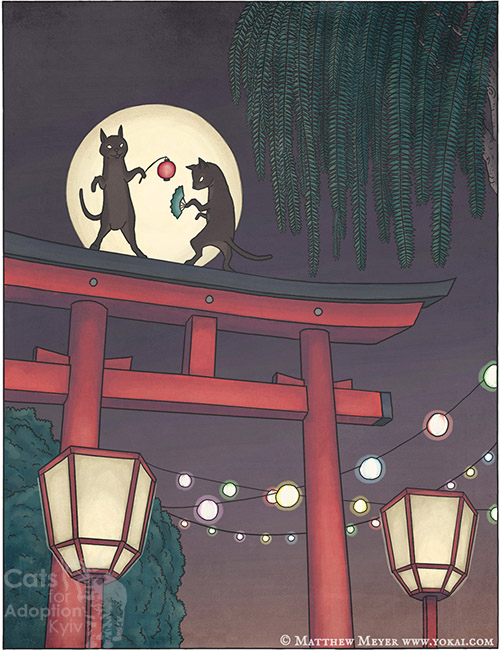

"Різновид Бакенеко, кішка-привид. Головна відмінність від інших магічних котів полягає у способі виникнення, а також у нематеріальній природі. Адже Бакенеко, як правило, це чудовисько, тоді як Кайбьо – мстивий дух."
Для того, щоб стати Кайбьо, кішка має випити крові своєї господині. При цьому господиня має бути вбита або вчинити самогубство через якусь несправедливість. Кішка, що попила крові, може приймати людську подобу (як правило, спочатку господині, а потім й інших вбитих нею людей), і в цьому вигляді має надлюдську силу. Ті, що потрапили під чари кішки-привида, в прагненні знищити її, починають рубати мечем на всі боки, вбиваючи всіх поспіль. Кайбьо дуже сильна й живуча. Вона легко може перегризти людині горло або задушити, а її саму убити непросто, хоча і можливо.